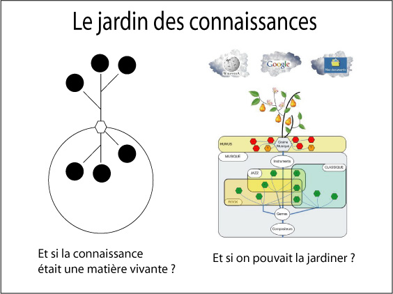

LE JARDIN DES CONNAISSANCES
Plateforme d'intelligence collective
A vous de jouez, jardinez la connaissance avec
des gestes simples comme vous le feriez en cultivant votre jardin.
Concevez et plantez des graines-processus,
choisissez les flux d’information qui
alimentent en temps réel la pousse des végétaux-documents,
partagez vos terreaux-concepts...
Au fil des saisons,
vous organisez collectivement les connaissances dans l’espace,
le temps et le sens...
En relation direct avec l’actualité,
trouvez ce que vous cherchez tous près,
rencontrez qui vous est proche au loin.